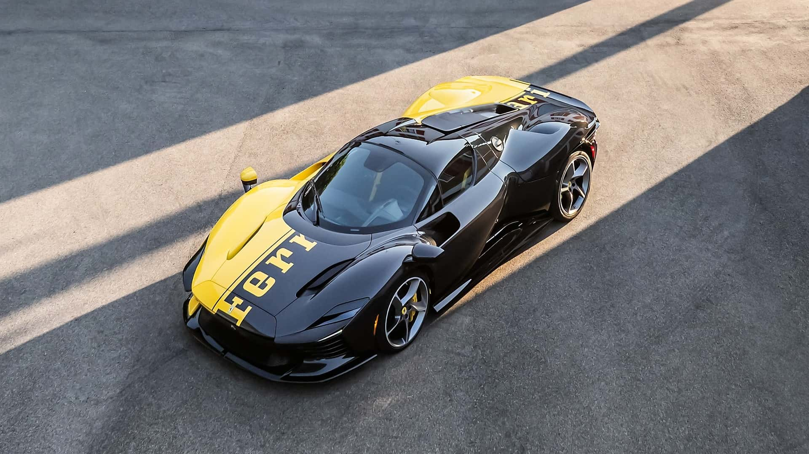
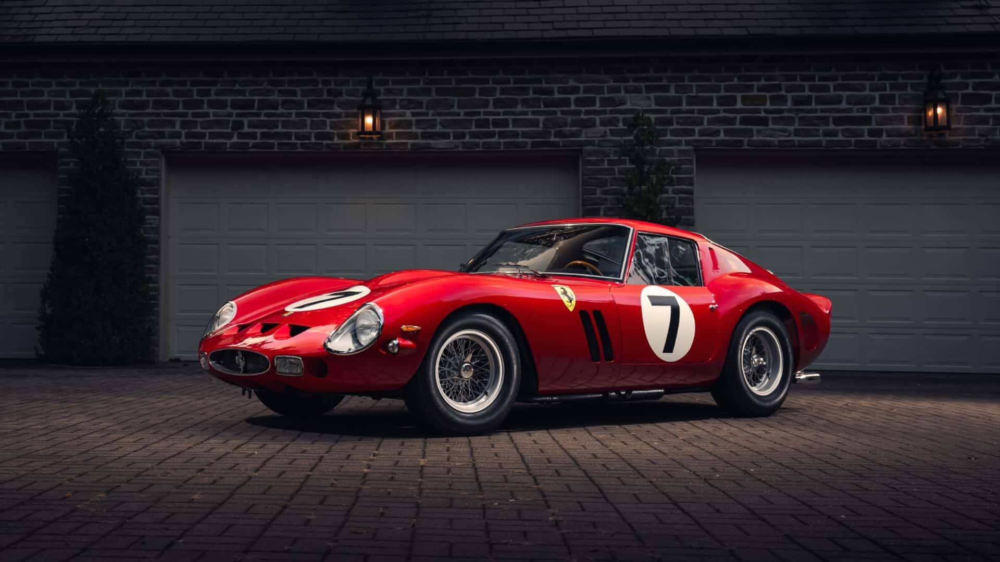
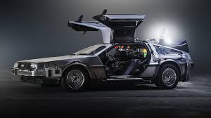
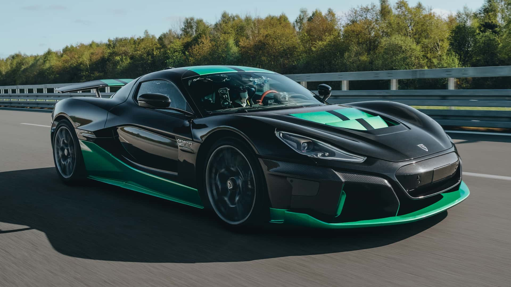
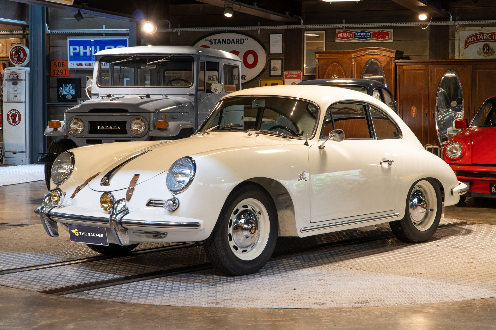
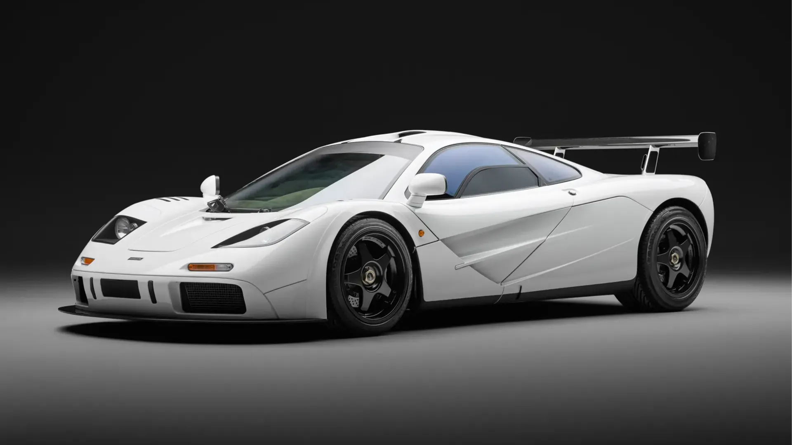

Nissan GT-R R34 Skyline
Apelidado "Godzilla". Motor RB26DETT e tela multifuncional de fábrica.

Ferrari Daytona SP3
Design retrô inspirado nos anos 60. Motor V12 naturalmente aspirado.

Ferrari 250 GTO
O carro mais caro do mundo (US$ 70 milhões em leilão). Apenas 36 unidades fabricadas.
ICONIC MOTORS
Alguns carros vão além do asfalto — eles se tornam lendas. O Iconic Motors nasceu para contar a história dessas máquinas que marcaram época. Dos imortalizados nas telas e pistas, aos hipercarros que empurram os limites da tecnologia, nosso acervo digital é uma vitrine para quem respira automobilismo.
Nissan Skyline GT-R R34
O Nissan Skyline GT-R R34 é um dos carros esportivos mais icônicos do mundo, famoso por seu motor 2.6 biturbo e presença marcante na cultura Japanese Domestic Market e na franquia Velozes e Furiosos.
Ferrari Daytona SP3
A Ferrari Daytona SP3 é um superesportivo de edição limitada, pertencente à prestigiada série "Icona" da marca. Inspirada nos protótipos de corrida da década de 60, a SP3 combina um visual clássico com tecnologia aerodinâmica radical.
Ferrari 250 GTO
A Ferrari 250 GTO (1962-1964) é um dos carros mais raros e valiosos do mundo. Foram produzidas apenas 36 unidades. Projetada para dominar as pistas, a sigla significa Gran Turismo Omologato.

DeLorean DMC-12
O DeLorean DMC-12 é um lendário carro esportivo famoso por seu design com carroceria de aço escovado, portas asa-de-gaivota e por estrelar a franquia "De Volta para o Futuro".

Nissan GT-R R35
O Nissan GT-R R35, lançado em dezembro de 2007, é um dos superesportivos mais icônicos do mundo. Conhecido como "Godzilla", o modelo de 2007 revolucionou a indústria por sua tecnologia e desempenho, capaz de rivalizar com carros muito mais caros.

Rimac Nevera
O Rimac Nevera é um hiperesportivo 100% elétrico fabricado pela montadora croata Rimac Automobili. Reconhecido mundialmente como um dos carros de produção mais rápidos e potentes do planeta, batento o recorde de 0-100 km/h em menos de 2 segundos.

Porsche 356
O Porsche 356 é o primeiro carro de produção da marca, lançado em 1948. Projetado por Ferry Porsche, destacou-se pela aerodinâmica refinada e motor traseiro boxer. O clássico esportivo serviu de base para toda a linhagem da fabricante alemã.

Lamborghini Countach
O Lamborghini Countach é um dos superesportivos mais icônicos da história automotiva. Famoso por seu design futurista, em formato de cunha, e pelas portas que abrem para cima (estilo tesoura), o modelo foi produzido originalmente entre 1974 e 1990.

McLaren F1
Lançado em 1992, foi o carro mais rápido do mundo por 13 anos (386 km/h). Tem 3 lugares com o motorista ao centro. Motor V12 BMW. Apenas 106 unidades foram fabricadas.